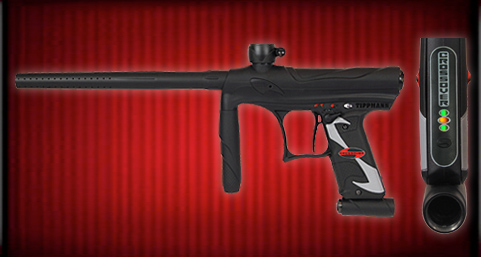
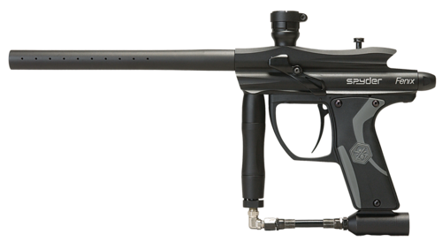
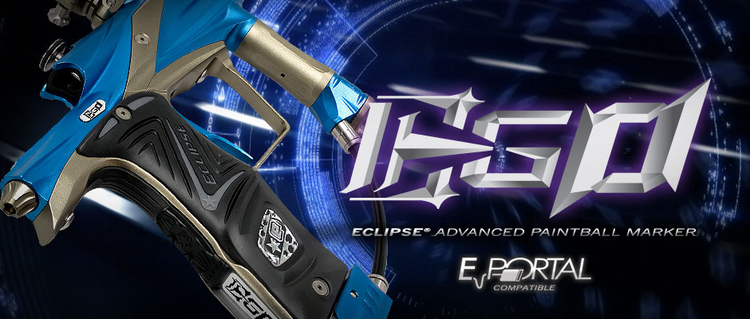

Tippman Crossover

- Caliber: 0.68
- Action: Semi-Automatic (Open Bolt Blow Forward Spool Valve System)
- Power: Compressed Air, Nitrogen, Co2
- Hopper Capacity: 200 Rds
- CO2 Capable:
- Feed Rate: 8-15 BPS (New ASTM Standards)
- Capable Gases: Compressed Air, Nitrogen, Co2
- Firing Rate: Basic: 8 shots per second; E-trigger: adjustable up to 15 shots per second
- Trigger: Semi-Auto Mechanical, Multi mode E-Trigger
- Barrel Length: 12 in
- Length: 19.5 in (w/o tank)
- Weight: 2.40 lbs (without tank)
- Effective Range: 150+ ft
Tippmann Site
2012 Spyder Fenix

- Caliber: 0.68
- Break Beam Eye (Anti-Chop System)
- LEAP II Circuit Board with Rear Facing Color Access Mode Display (CAMD)
- Dual Ball Detents with Aluminum Eye Covers
- Quick Release Bolt
- 11" Micro Ported Barrel
- Clamping Collar Feedneck
- 3 Way Adjustable Magnetic Response "Saber" Trigger
- Recessed Dual Texture Grip Panels
- High Impact Polymer Trigger Frame
- Adjustable Inline Regulator
- Standard Thread Vertical Adapter
- Steel Braided Hose
- External Velocity Adjuster
Spyder Site
2012 Spyder Fenix

- Caliber: 0.68
- Shaft 4 2-Piece Barrel
- New Push Operated Purge System (POPS)
- SL3 Inline Regulator
- Adjustable Low Pressure Regulator
- Zick 2 Rammer Assembly
- Cure 3+ Bolt
- Def-Tek Offset Feedneck
- C-Lever Clamping Feedneck
- Dual Selectable Trigger Switching - Opto and Micro Switches
- Dual Trigger Return Mechanisms - Spring and Magnetic Return
- Integrated Audible Beeper for Alarms and Actuations
- Capped and Uncapped Ramp Modes
- All Major Tournament Presets
- 9 Preset Debounce Modes
- 5-Point Adjustable Trigger
- T-Rail Mounting System
- BBSS (Break Beam Sensor System)
- Multicolored Transflective LCD Module
- Eclipse E-portal Compatible
- New contoured Rubber Grips and Push Button Console
- User Adjustable (Custom Manufactured) Solenoid Valve
- Break Beam Sensor System
Ego Site